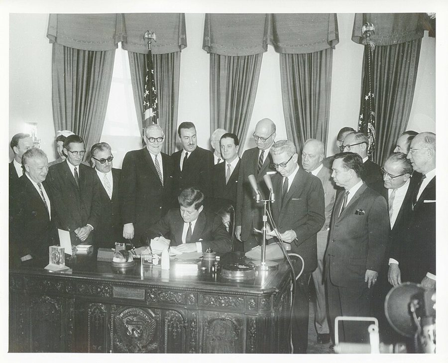
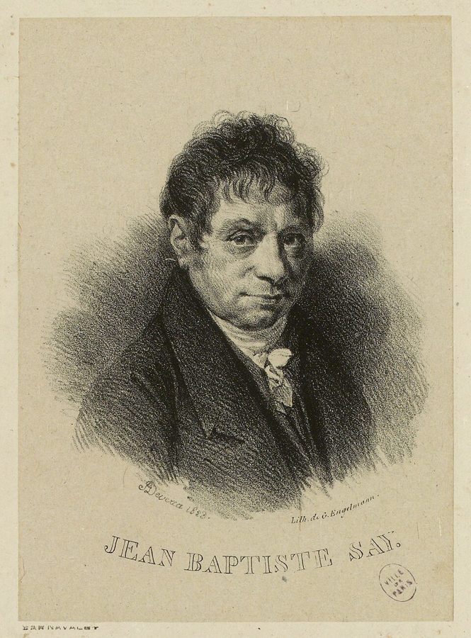
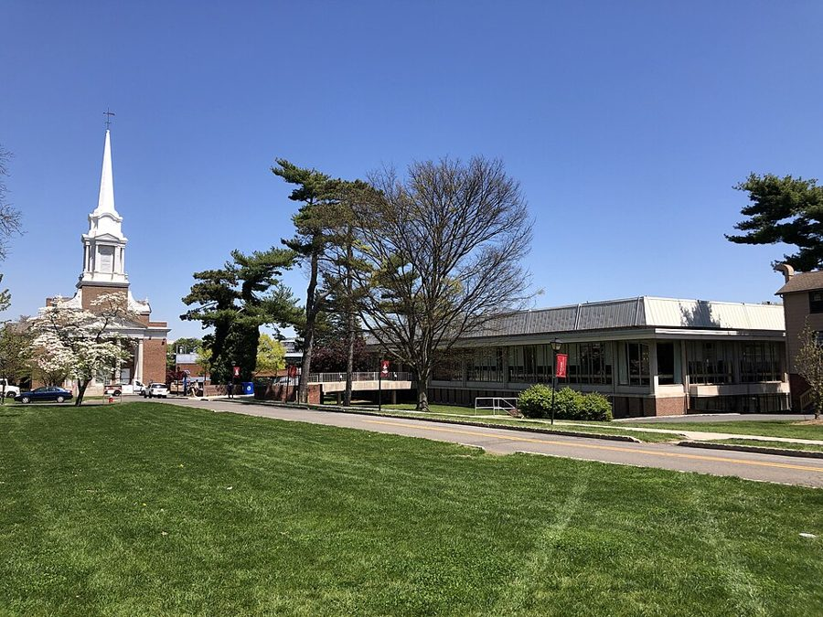
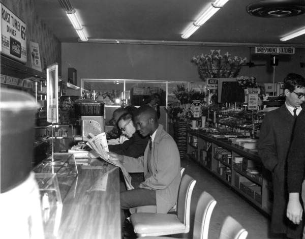

这一章在做什么
1961 到 1963 年，三十一到三十三岁。离开芝加哥，先在华盛顿当了一年政府经济学家，再去新泽西一所女子学院教了一年书，两处都以辞职收场，博士论文还悬着。
这是第 6 章的上半，一节一件小事，多半是一段顶嘴。读的时候看两样：他每次为什么不肯让；机关和学校各自想要他做的是什么。
1961 1962 1963 1964
芝加哥大学，住校的最后一年
预算局，三天
劳工部，华盛顿
其间考过博士综合考试
Douglass College
霍华德，下一页
第一学期末递辞呈，教到学年结束
31 岁
33 岁
本站示意图。月份按书里的线索估计：他说自己提前两周离校，教职从秋季学期开始。Douglass 的薪水比政府低两成。
出场的人
这一页有名有姓的公众人物不多，同事朋友大多只有名、没有姓，按作者在序里的说法多半是化名。听书时先把这几个分清。
George Stigler /ˈstɪɡlər/ 芝加哥大学教授，上一章里他专程去投奔的导师。这里两人对古典经济学家的读法谈不拢，Stigler 表示可以让别人来带他的论文。
Bernard 和 Jim 劳工部的同事 两个刚入行的黑人经济学家，此后几十年的朋友。Jim 是在作者调走之后才进劳工统计局的，从别人嘴里先听说了他。
Arthur Goldberg /ˈɡoʊldbɜːrɡ/ 肯尼迪的劳工部长（1961–1962），后来进了最高法院。作者没见过他，只替他准备过一份给国会的材料。
Al 黑人社会学家，在纽约教书 作者嘴里的激进派朋友，家境优渥，住格林威治村，有幽默感。两人的交往方式是互相取笑。这是他第一次出场，后面还会常来。
Emily Douglass 的社会学同事 年长的女同事，私下赞成他的教法，自己早已放弃这样教。
系主任 Douglass，社会学家，没有名字 经济学和社会学合在一个系，主任是社会学出身。第 16 节和作者谈话的是他。
Joe Talarico /ˌtæləˈriːkoʊ/ 系主任推荐作者去请教的同事，学生眼里的好老师。只在一句话里出现。
Miss Robinson、Miss Wilson 两个学生 前一个在课堂上被追问李嘉图，后一个坐到了他的办公桌上。那时教授称学生 Miss 加姓。
Robert Heilbroner /ˈhaɪlbroʊnər/ 不出场，是一本书的作者：The Worldly Philosophers （1953），讲经济学家生平和思想的畅销读物，系里选它做辅助教材。
三个 chairman。 第 16 节的系主任是 Douglass 的；第 17 节热情发聘书又撤回的是 American University 的经济系主任；同一节里「问不出一句准话」的是 Howard 的。听书时靠校名分。
背景：作者默认你知道的事
章名是一首歌
风滚草（tumbleweed）：枯了以后整株断根，被风吹着到处滚。Noah Wulf，CC BY-SA 4.0，维基共享资源
书里没说章名的出处。本站对上的是西部歌曲 Tumbling Tumbleweeds （1934 年，Bob Nolan 作），歌里反复唱「跟着翻滚的风滚草一路漂」。
上一章最后一句，作者说自己恐怕得 drifting along 一阵，等事情自己理出头绪。这一章就是那一阵：这一页里三天、一年、一年，换了三个地方。
GS 级别：差两级是差多少
美国联邦文职雇员按 General Schedule 定级，数字越大越高，薪水跟着级别走。经济学家这类专业职位两级一跳：5、7、9、11。所以 GS-9 和 GS-7 不是差一点，是差一整档。
定级要过文官委员会（Civil Service Commission）这一关。预算局（Bureau of the Budget）是总统手下编预算的机构，1970 年改组成今天的 OMB。
专业职位的台阶
GS-5
GS-7 通常的起点
GS-9 他够格
GS-11
往上还有
三个机构开的条件
预算局（他最想去）
答应按 GS-9 聘经济学家，手续卡在文官委员会
联邦储备系统
有自己的一套职级标准，不受这个限制
劳工部
挂「管理培训生」的名义给 GS-9，干的是经济学家的活
本站示意图，按第 1 节的说法整理。他推掉后两家去了预算局，到任后发现答应的事没有兑现。
工资工时法和最低工资

1961 年 5 月 5 日，肯尼迪签署提高最低工资的法案。作者进劳工部就在这之后不久。CarlAlbertArchives，CC BY-SA 4.0，维基共享资源 Fair Labor Standards Act （1938）规定了联邦最低工资，以及每周超过 40 小时要付加班费。执行它的是劳工部的 Wage and Hour Division，作者调去的就是这里。
农业当时整个不在这部法律之内，他的头一个课题是：把农业也管进来行不行。上一章末尾他已经对最低工资起了疑心，带着这个疑心读第 7 节。
Say’s Law 和一场一百五十年前的吵架

萨伊（Jean-Baptiste Say，1767–1832），法国经济学家。1823 年的石版画。Achille Devéria，公有领域（CC0），维基共享资源 萨伊定律通常被概括成「供给自己创造需求」：东西生产出来，生产者就有了收入去买别的东西，所以不会所有商品同时卖不掉。
1810–1820 年代，马尔萨斯等人说普遍过剩是可能的，李嘉图等人说不可能。作者想写的论文是这场争论的历史；第 11 节课堂上问的「李嘉图怎么看萧条」也是这件事。
不会普遍过剩
会
萨伊 Say
詹姆斯·穆勒 James Mill
李嘉图 Ricardo
马尔萨斯 Malthus
西斯蒙第 Sismondi
1810–1820 年代
1936：凯恩斯重提，站在右边
1961：Stigler 和他，各有各的读法
本站示意图。谁站哪边是教科书上通行的分法。作者和 Stigler 谈不拢的，是这些人当年的话该怎么读。
Douglass College

Douglass 校园：Voorhees 礼拜堂（左）和 Mabel Smith Douglass 图书馆（右），2024 年。Famartin，CC BY-SA 4.0，维基共享资源 在新泽西州的 New Brunswick，纽约西南几十公里，是州立的罗格斯大学（Rutgers）下面的女子学院。1918 年建校时叫 New Jersey College for Women，1955 年改用首任院长 Mabel Smith Douglass 的姓。
注意是两个 s。系主任那句「我们是州立大学」指的就是这层关系：州里的纳税人出钱，不能只教尖子。
1962 年的民权运动在争什么

1960 年 3 月 13 日，佛罗里达州塔拉哈西，Woolworth 百货店午餐柜台的静坐。Florida Memory，公有领域，维基共享资源 1960 年起，南方的黑人学生到只招待白人的午餐柜台坐着不走（sit-in），1961 年又有人搭长途汽车一路南下，冲击车站的隔离。这几年的焦点是 public accommodations ：餐馆、旅店、车站这类对公众营业的地方。
第 8 节是作者 1962 年对这个重点的怀疑。他不反对废除隔离法，问的是力气该先花在哪。
留个记号：后面还会回来
这一页作者明说「后来」的地方不多，更多是前面埋的线在这里接上。
没写成的论文题目 第 6 节 Say’s Law 这个题目被导师泼了冷水，导师也不带了，他只说这事「暂时」不用管。记住它悬在这里。
「学生喜欢」 第 10 节 同事为一本教材辩护的话。作者当场就说，这句话后来在 Douglass 和别处会一再听到。第 14、16 节马上就有。
去黑人大学教书的念头 第 17 节 上一章末尾他说最想去黑人大学教书，又对 Howard 的系主任没信心。这里 Howard 再次出现，他还是问不出准话。
李嘉图的那封信 第 5 章第 25 节 → 这里第 7 节 本站的看法：上一章他抄下李嘉图说不为权贵的笑脸偏离诚实的那句话。第 7 节给部长写材料，是这句话头一回碰上实际的场合。
词与短语
词条按书里出现的顺序排，小标题是原书用 • • • 隔开的各节。斜体小字是那句话里的几个词，在 Kindle 里搜它就能跳到那一句。单个的生词长按就能查，这里收的主要是词典帮不上忙的。
第 1 节 · 三天的工作
in residence
… my final year in residence to …
（读博规定的）在校年限
和「居住」无关。满了 residence requirement 就可以离校工作，考试和论文回头再补。
be missed
… unlikely to be missed, much less …
被人发现不在
不是「被想念」。much less = 更不用说。
GS-9
… be hired as a GS-9, either …
联邦公务员第 9 级
可以指级别，也可以指这个级别的人，所以前面有 a。见上面的背景。
management intern
… title of “management intern” or as …
管理培训生
不是今天说的实习生。是政府挑出来当后备干部培养的新人，第 2 节有解释。
hang-up
… there was a bureaucratic hang-up in …
卡住的地方
和挂电话无关。下一段的 snag 是同一个意思。
in no financial condition to
… in no financial condition to pass …
手头的状况不允许
往轻里说：穷。pass up = 放着（机会）不要。
iron out
… had still not been ironed out. …
（把麻烦）摆平
字面是熨平。
double-dealing
… was responsible for this double-dealing to …
两面手法，当面一套背后一套
the further distinction
… have the further distinction of being …
又添一项「殊荣」
distinction 本是荣誉。把对方劝他留下的理由原样接过来，变成走的理由。
第 2 节 · 问卷
on short notice
… that resigning on short notice would …
没提前几天打招呼
notice = 事先通知。第 7 节的 advance notice 同。
specially anointed
… sort of specially anointed group who …
钦点的
anoint 本义是给国王、祭司涂圣油。挖苦。
be groomed for
… who were being groomed for future …
被当作……的接班人培养
groom 本义是给马刷毛。
study to death
… others wanted to study to death. …
没完没了地研究
… to death = 到让人受不了的程度。
have the bright idea of
… Someone had the bright idea of …
有人想出了个「高招」
bright idea 几乎总是反话：馊主意。
a battery of
… an extensive battery of psychological questions …
一整套（测验）
不是电池。本义是一排大炮。
nobody’s business
… questions that were nobody’s business.” …
谁也管不着的事
none of your business 的全称版。
What would happen if everybody
… What would happen if everybody had …
要是人人都像你这样……
训人的套话，本来不等回答。他偏偏老老实实答了。
第 3 节 · 在农业部图书馆
a little precious
… were a little precious for my …
有点矫情，自视过高
熟词生义：precious 说人或场合，是「装腔作势」。
“a wonderful opportunity”
… described as “a wonderful opportunity” to …
「大好机会」
引号里是上司的原话，引号本身是作者的白眼。前半句已经说了：很无聊的活。
get myself transferred
… I got myself transferred to another …
想办法让自己调走了
get oneself + 过去分词 ：是他自己活动的结果，不是上面安排。
exempt
… to agriculture, which was currently exempt. …
不在这部法律管辖之内
法律用语：豁免。
quitting time
… 15 minutes before quitting time or, …
下班时间
不是辞职。
out of touch with
… We were so out of touch with …
和……断了来往
这一段最后是个包袱：入职半年，被当成新人介绍。
第 4 节 · 失窃
efficiency
… was an efficiency or studio apartment, …
开间，连卧室都不单分的小公寓
美国说法，全称 efficiency apartment。和「效率」无关。
make progress look illusory
… It made progress look somewhat illusory. …
显得「进步」像是错觉
自嘲：哈佛、哥大、芝加哥读了六年，住的还是原样的房子。
burglarize
… I had been burglarized. …
入室行窃
美式动词，英国说 burgle。读 /ˈbɜːrɡləraɪz/。
a clean job
… a very quick, clean job, with …
干得很利落的一票
job 这里指作案。
第 5 节 · 「又一个 Tom Sowell」
You call yourself
… “You call yourself the Bureau of …
就这也好意思叫……
Jim 的意思：你们做的只是加减乘除（arithmetic），够不上统计学（statistics）。
Another Tom Sowell
… someone said. “Another Tom Sowell!” …
又来一个 Tom Sowell 那样的
another + 人名 = 又一个那号人。B.L.S. 是劳工统计局的缩写。
make such an impression
… had made such an impression at …
留下了这么深的「印象」
反着读：提他的名字，全办公室都要不痛快。
第 6 节 · 论文题目，和一场面试
old standby
… one of the old standby theories …
老资格的常备（理论）
standby 是一直备着、随时拿来用的东西。
Say’s Law
… of economics called Say’s Law. …
萨伊定律
Say 是人名，读 /seɪ/。听书时像「say 的定律」。见背景。
exactly my view of his
… was exactly my view of his …
我对他那套解释，恰好也是这个看法
前一句说导师认为他根本错了。这一句原样奉还。
step aside
… was willing to step aside as …
让位，不再担任
see eye to eye
… “we seldom see eye to eye.” …
看法一致
不是对视。Stigler 信里的话，客气而干脆。
a moot point
… it remained a moot point for …
眼下讨论了也没用的问题
美式用法：没有实际意义、不必争的。因为考试没过，谁带论文都谈不上。
comprehensive exams
… the dreaded comprehensive exams to …
博士资格综合考试
修完课、写论文之前的一道关，口语叫 comps。过了才算博士候选人。
white-maned
… was a white-maned professor who was …
一头白发的
mane 是狮子、马的鬃毛。
not a snowball’s chance in hell
… not a snow ball’s chance in …
绝无可能
地狱里的雪球。书里把 snowball 排成了两个词。
out of line
… the question itself was out of line. …
越界，不该问
demand curves sloping upward
… draw demand curves sloping upward rather …
把需求曲线画成向上斜的
价格越高买得越少，所以需求曲线向下斜，这是入门第一课。意思是：不管我信什么，课上讲的还是那套经济学。
write off
… I really wrote off the whole …
当它已经黄了
会计用语：把坏账勾销。
第 7 节 · 给部长准备的材料
pooh-bahs
… Labor, but other pooh-bahs informed me …
大人物们（挖苦）
读 /ˈpuːbɑː/。出自 1885 年的英国喜歌剧 The Mikado ，里面一个身兼无数官职的角色。
what the Department’s position would be
… of what the Department’s position would …
部里的立场将是什么
注意顺序：先有结论，再给数据。position = 立场。
the powers that be
… The powers that be were both …
上头，掌权的那些人
固定说法，be 不变形。出自《圣经》英译。
little hints
… I had missed their little hints …
那点暗示
他说自己「没听出来」。是真没听出来还是不接，留给读者。
in his usual confident way
… in his usual confident way, to …
照例信心十足地
全节的刺在这半句：数据其实得不出结论。
第 8 节 · 对民权运动的疑问
stand on the sidelines
… awkward to stand on the sidelines …
站在场外
sidelines 是球场边线。自己不上场，却批评场上的人。
public accommodations
… with greater priority than equality-of-public-accommodations that …
对公众营业的场所
法律术语，不是「住宿」。餐馆、旅店、车站、影院都算。见背景。
a classic problem in economics
… as a classic problem in economics. …
一道典型的经济学题目
指稀缺资源怎么分配。他把时间、精力、别人的善意都算成有限的资源。
be spared for
… and effort could be spared for …
匀得出来给……
spare 作动词：从有限的东西里腾出一点。
redneck
… hamburger stand operated by a redneck? …
南方乡下的穷白人（蔑称）
字面是晒红的脖子。hamburger stand 是路边的汉堡摊。
fifth-rate
… to be some fifth-rate college—I am …
不入流的
比 third-rate（三流）还往下数两档。
accredited
… sure whether it was accredited—that would …
通过了办学认证的
美国高校由民间的地区认证机构认证，没认证的学位基本不被承认。
validation
… seeking acceptance and validation by white …
（别人的）认可
这一节他真正反感的东西在这个词上。
第 9 节 · 电视上的女大学生
Open End
… the television program “Open End,” which …
电视谈话节目名
David Susskind /ˈsʌskɪnd/ 主持，1958 年开播。名字的意思是没有固定的结束时间，谈到谈完为止。
This is what you are going off to teach
… what you are going off to …
你要去教的就是这种
用 what 不用 who，是把人当「货色」说。
meant nothing to me
… whose name meant nothing to me …
这名字我当时毫无印象
Jane Fonda，演员，后来以反越战等政治活动出名。作者只报名字，不加评论。
第 10 节 · 「学生喜欢」
there are those who love it
… but there are those who love …
可是有人爱它
1818 年律师 Daniel Webster 在最高法院替母校达特茅斯学院辩护时的名句，美国人常引。
an isolated fluke
… not just an isolated fluke. …
孤零零的一次侥幸
fluke = 碰巧成的事。指上一章发在《美国经济评论》的那篇。
The Worldly Philosophers
… supplementary book—The Worldly Philosophers by Robert …
《世俗哲人》
worldly = 关心尘世俗务的。书名是说经济学家是琢磨赚钱谋生这类俗事的哲学家。
not worth the paper it’s written on
… worth the paper it’s written on.” …
连印它的纸都不值
前面两次欲言又止，被追问到第三次才说出来。
was to become
… This phrase was to become a familiar …
后来成了……
be to 表示后来果然发生的事。回忆录里看到它，就是作者在做记号。
第 11 节 · 第一堂课，和 Miss Robinson
mimeograph
… since the list was mimeographed, there …
油印
读 /ˈmɪmiəɡræf/。复印机普及之前，讲义都是刻蜡纸油印的。
an evacuation like Dunkirk
… anticipated an evacuation like Dunkirk. …
敦刻尔克式的大撤退
1940 年英法军队从法国敦刻尔克渡海撤走三十多万人。这里是怕学生成批退课。
you would never know it from the grades
… never know it from the grades. …
光看我给的分数，可看不出来
it 指他喜欢这些学生。意思是分数给得很低。
prepackaged education
… receive a prepackaged education-and that was …
包装好了直接递到手里的教育
像超市里分装好的食品。
bring home to
… This was brought home to me …
让（我）真切地体会到
和回家无关。
第 12 节 · 老古板
with some pique
… lady told me, with some pique, …
带着点恼意
读 /piːk/。她恼的是特意找他而他没来。
in tune with things
… A colleague more in tune with …
对周围的风向更灵通
in tune 本是音准对得上。
old fogey
… be such an old fogey at …
老古板
读 /ˈfoʊɡi/。他当时三十二岁。
第 13 节 · Al
a spectator sport
… of education as a spectator sport, …
坐在看台上看的比赛
学生把上课当成看别人打球，自己不下场。
a real character
… Al was a real character. …
一个活宝，很有意思的怪人
character 说人，是「有个性、有戏的人」，不是品格。
phoney as a three-dollar bill
… as phoney as a threedollar bill, …
假得不能再假
美元没有三块钱的票面。指 Al 那句 “our black people”。
politically correct
… Al was “politically correct,” long before …
「政治正确」
这个说法 1990 年前后才流行，作者是拿写书时的词回头去形容 1960 年代的人。
needle
… To needle him, I went out …
拿话刺他，故意逗他
needle 作动词。go out of my way to = 特意去做。
down home
… my way to be “down home.” …
土，南方乡下老家的做派
down 指南方。作者是真从南方穷人家出来的，Al 不是。
watermelon
… “I’m eating watermelon,” I said (which …
西瓜
美国有一种嘲笑黑人的老套形象：咧着嘴啃西瓜。体面的黑人避之不及，所以 Al 尴尬。「擦耳朵」是把这个形象再夸张一步。
Greenwich Village
… New York for years—in Greenwich Village. …
格林威治村
读 /ˈɡrenɪtʃ/，w 不发音。曼哈顿南部文人艺术家聚居的街区，居民以白人为主；哈莱姆在曼哈顿北头。这是包袱所在。
第 14 节 · Emily 的忠告
butt my head against a stone wall
… keep butting my head against a …
拿头撞墙，白费力气
cram … down their throats
… cram abstractions down their throats all …
硬往他们喉咙里塞
abstractions：抽象的概念和推理。
the almighty Grade
… the grade—the almighty Grade—will depend …
至高无上的分数
almighty 平时只用来说上帝，G 也照着 God 大写。
2.8 children
… married, and have 2.8 children.” …
生 2.8 个孩子
把统计平均数安到每个人头上，是社会学家的玩笑：她们的人生都一个样。
if she could afford them
… prefer, if she could afford them. …
如果她坚持得起的话
afford 不是钱的事：坚持自己的标准，代价是年年和学生较劲。
第 15 节 · 教女生
gratuitous
… I deliberately made a gratuitous remark: …
没来由的，多余的
不是「免费」。读 /ɡrəˈtuːɪtəs/。
a federal case
… celebre, if not a federal case. …
闹到联邦法院的大案
make a federal case out of = 小题大做。cause célèbre /ˌkɔːz səˈleb(rə)/ 是轰动一时的事件。
fellowships
… harder for women to get fellowships. …
研究生奖学金
给研究生的全额资助，不是「友谊」。
non-academic inclinations
… might have had some non-academic inclinations, …
学业以外的心思
委婉语：对老师有意思。
hat pin
… if I had a hat pin right …
帽针
旧时女人把帽子别在发髻上的长针，十几厘米长。
the Ancient Mariner
… I felt like the Ancient Mariner, …
老水手
柯勒律治 1798 年的长诗。船困在海上，四面是水，一滴不能喝。
第 16 节 · 和系主任的谈话
gung-ho
… a couple of gung-ho students in …
劲头十足的
读 /ˌɡʌŋ ˈhoʊ/。二战时海军陆战队从中文「工合」（工业合作社）借来的口号。
grade on a curve
… the lure of grading on a …
按全班的分布给分
curve 是正态分布曲线：不管考得怎样，前百分之几得 A。他反对的理由就在这一段。
a pretty fair summary
… that’s a pretty fair summary of …
概括得相当准确
fair = 公允。主任递了台阶（学生总爱夸大），他没下。
scoop lower
… you’ve got to ‘scoop lower’ and …
勺子往下面舀
主任的比方：把底下的学生也捞上来。
letters on their foreheads
… with those letters on their foreheads. …
脑门上刻着那几个字母
letters 是 C 和 D。他的意思：分数是用不用功的结果，不是天生的身份。
get some pointers
… with him—and get some pointers on …
讨教几招
pointer = 指点、窍门。
neither surprised nor dismayed
… he seemed neither surprised nor dismayed. …
既不意外，也不难过
往轻里说：对方巴不得。
第 17 节 · 撤回的聘书
200 game
… at least one 200 game in …
（保龄球）一局打到 200 分
一局满分 300。平均 101 是新手水平，279 接近满分。
other things being equal
… Other things being equal, I would …
别的条件都一样的话
经济学的口头禅（拉丁文 ceteris paribus）。下半句把它拆了：别的条件差得远。
top brass
… was a lot of top brass …
高层
本是军队里说将官，brass 指帽徽肩章上的铜。
rubber-stamp
… they were prepared to rubber-stamp the …
照章盖印，不再审查就批准
waive the usual rigmarole
… would waive the usual rigmarole and …
免掉那套惯常的繁文缛节
waive（放弃、免去）和 wave 同音。rigmarole 读 /ˈrɪɡməroʊl/。
you might be well advised to
… you might be well advised to …
您最好还是……
拒绝信的客套。整句翻成大白话：有人说你只顾研究不管学生，我们不要了。
a knife in the back
… was a knife in the back …
背后捅的一刀
another painful lesson
… It was another painful lesson in …
又一堂惨痛的课
上一章在哥大吃的亏，他叫作这方面的第一课，并说还会有。这是接上的那一课。academic ethics 是反话。
第 18 节 · 走了一半学生
a blessing in disguise
… an enormous blessing in disguise. …
因祸得福
字面：乔装打扮的福气。
值得停下来的句子
“Why would Heilbroner say that if it wasn’t true?”— 第 11 节，Miss Robinson 被问到「你自己怎么看」之后。本站译：「要不是真的，Heilbroner 干吗那么说？」
语法简单：Why would A do B if not C ，反问，意思是「印在书上的当然是真的」。停下来是因为它在这段对话里的位置。
她两份材料都读了，也都背得出来，功课没有问题。她缺的是把两句话放在一起比一比的习惯。作者把这句话放在一节的最后，后面不加一个字。第 14 节 Emily 说的十二年，是给这句话做的注。
Black people did not—and do not—have unlimited time, unlimited resources, or unlimited goodwill in the larger society.— 第 8 节。本站译：黑人过去没有、现在也没有用不完的时间、用不完的资源，或者大社会里用不完的善意。
两个破折号夹着的 and do not 把时态从 1962 年拉到写书的 2000 年：他说这个判断到今天没变。三个 unlimited 里，前两个是经济学课本上的稀缺资源，第三个 goodwill 是他自己加的。
这是用入门课的框架看一场社会运动：东西有限，就得排先后。同意不同意是另一回事，他后来几十年谈种族问题，用的一直是这个框架。这一句是它在书里最早的样子。
检查一下理解
先在心里答，再点开。答错的那题，回书里把那一节再读（或再听）一遍。
1. 他在预算局只干了三天就辞职，是因为不喜欢那份工作吗？ 不是，预算局是他最想去的地方。他为它推掉了另外两家，条件是对方保证按 GS-9 聘他；到了才发现这事并没有办妥，他认为自己被骗了。周四辞、周五走，是故意要闹出动静，让经手的人被追问。
2. 那位黑人秘书说「所以你不能走」，他的回答是答应了，还是拒绝？ 拒绝。她的理由是他是这里第一个黑人专业人员；他把这个「第一」接过来，说那自己就再当一回第一个辞职的。这是玩笑的句式，意思很硬：他不接受因为肤色就该忍下来。
3. Stigler 表示不再当他的论文导师，是两人翻脸了吗？ 书里没有这个意思。两人对十九世纪初那批经济学家的理解相反，面谈和通信都说服不了对方，Stigler 于是愿意让别人来带。作者只说这有点讽刺，因为他当初去芝加哥就是冲着 Stigler。
4. 给劳工部长准备材料那次，他是故意和部里的立场唱反调吗？ 不是。四组数据两组支持部里、两组相反，他照实写成「合起来得不出结论」。上头失望，把报告大改后才交上去。他说自己没听出那些暗示；他没有反对部里的结论，只是不肯替数据说它没说的话。
5. 他在公交车上听见学生夸 Emily 教得好，这是在写 Emily 的成功吗？ 表面是，实际是反着的。学生夸的每一条，按他的标准、也按 Emily 自己本来的标准，都是毛病。她私下赞成他的教法，只是撑不下去，改成了学生喜欢的那种。
6. American University 撤回聘书的信里说他「对研究兴趣浓厚」，这是夸奖吗？话是从哪儿来的？ 不是夸奖，是说他只顾自己做研究、不管学生。他只在 Douglass 教过书，所以消息只能来自那里的同事。他觉得冤：那三篇被接受的论文都是去 Douglass 之前写的，这一年他根本没时间做研究。